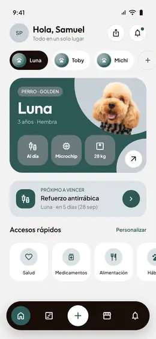

BaltoCada pantalla del Figma convertida a HTML, CSS y JavaScript, conectada siguiendo el flujo de uso. Diseñado para un móvil de 390 × 844 que se adapta a 380 × 820 y a cualquier pantalla.

Desde que se abre la app hasta tener el perfil de la mascota listo.
Los módulos a los que se llega desde la pantalla de inicio y la barra de navegación.